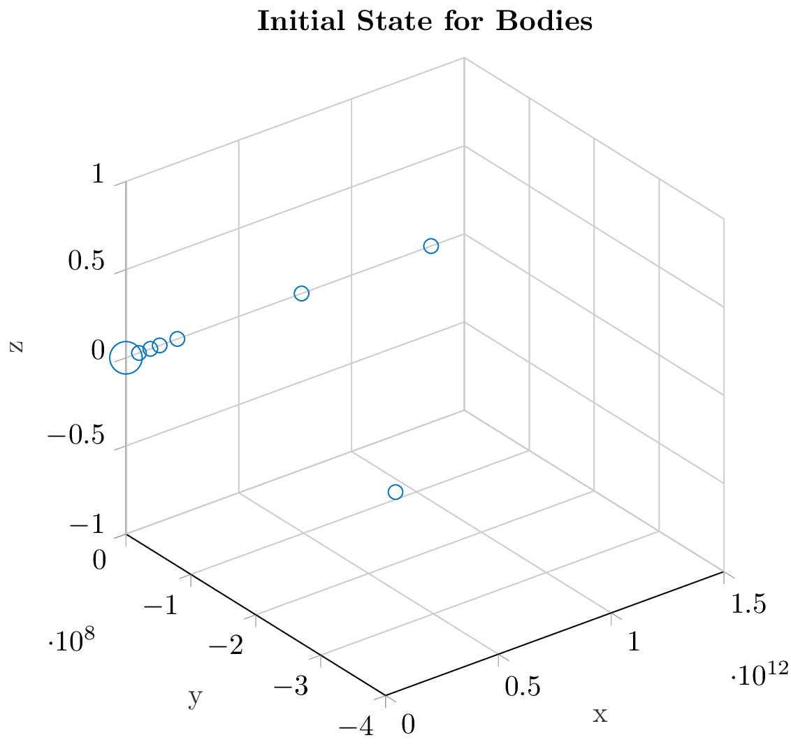

\documentclass{standalone}
\usepackage{pgfplots}
\pgfplotsset{compat=newest}
%% the following commands are needed for some matlab2tikz features
\usetikzlibrary{plotmarks}
\usetikzlibrary{arrows.meta}
\usepgfplotslibrary{patchplots}
\usepackage{grffile}
\usepackage{amsmath}
%% you may also want the following commands
%\pgfplotsset{plot coordinates/math parser=false}
%\newlength\figureheight
%\newlength\figurewidth
\definecolor{mycolor1}{rgb}{0.00000,0.44700,0.74100}
\begin{document}
% This file was created by matlab2tikz.
%
%The latest updates can be retrieved from
% http://www.mathworks.com/matlabcentral/fileexchange/22022-matlab2tikz-matlab2tikz
%where you can also make suggestions and rate matlab2tikz.
%
\definecolor{mycolor1}{rgb}{0.00000,0.44700,0.74100}%
%
\begin{tikzpicture}
\begin{axis}[%
width=2.853in,
height=3.04in,
at={(0.528in,0.41in)},
scale only axis,
xmin=0,
xmax=1500000000000,
tick align=outside,
xlabel style={font=\color{white!15!black}},
xlabel={x},
ymin=-400000000,
ymax=0,
ylabel style={font=\color{white!15!black}},
ylabel={y},
zmin=-1,
zmax=1,
zlabel style={font=\color{white!15!black}},
zlabel={z},
view={-37.5}{30},
axis background/.style={fill=white},
title style={font=\bfseries},
title={Initial State for Bodies},
axis x line*=bottom,
axis y line*=left,
axis z line*=left,
xmajorgrids,
ymajorgrids,
zmajorgrids,
legend style={at={(1.03,1)}, anchor=north west, legend cell align=left, align=left, draw=white!15!black}
]
\addplot3[scatter, only marks, mark=o, color=mycolor1, mark options={}, scatter/use mapped color=mycolor1, visualization depends on={\thisrow{size} \as \perpointmarksize}, scatter/@pre marker code/.append style={/tikz/mark size=\perpointmarksize}] table[row sep=crcr]{%
x y z size\\
0 0 0 5.59016994374947\\
57910000000 0 0 2.51246890528022\\
108200000000 0 0 2.51246890528022\\
149600000000 0 0 2.51246890528022\\
149600000000 -363300000 0 2.5\\
227920000000 0 0 2.51246890528022\\
778500000000 0 0 2.51246890528022\\
1352550000000 0 0 2.51246890528022\\
};
\end{axis}
\end{tikzpicture}%
\end{document}Created by David Li